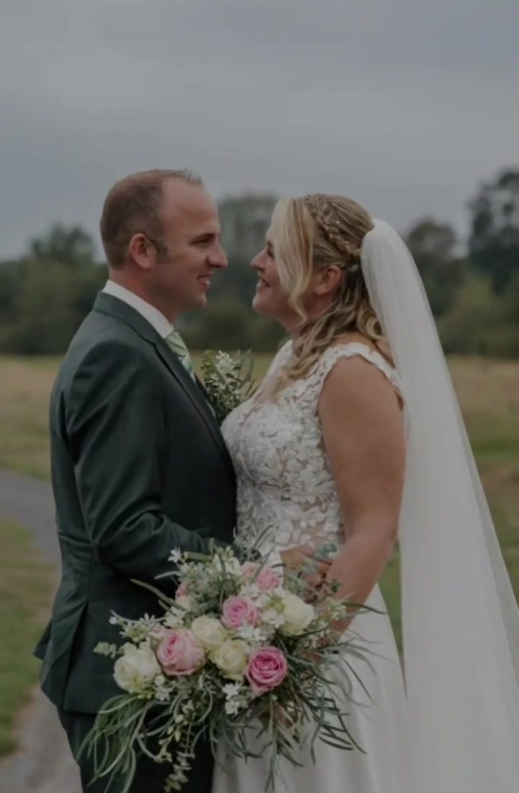
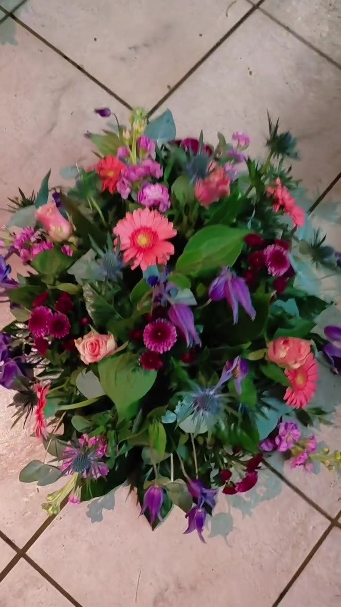
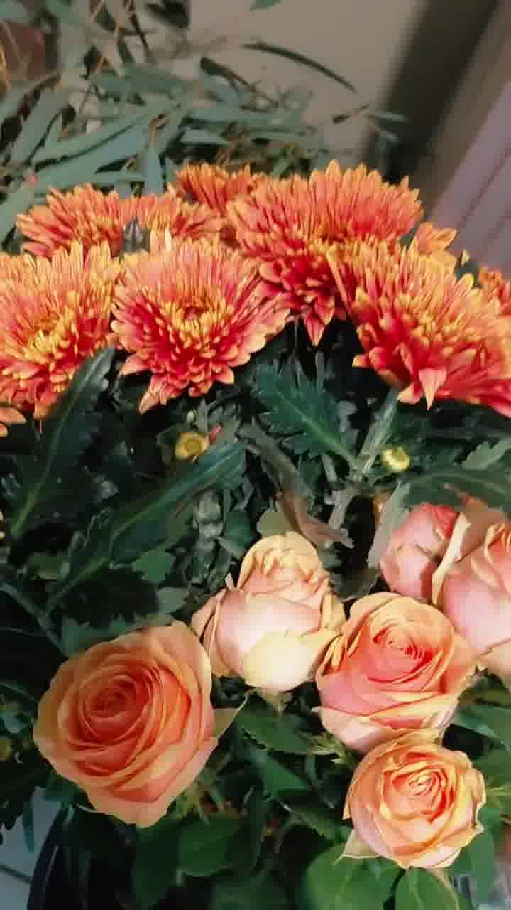
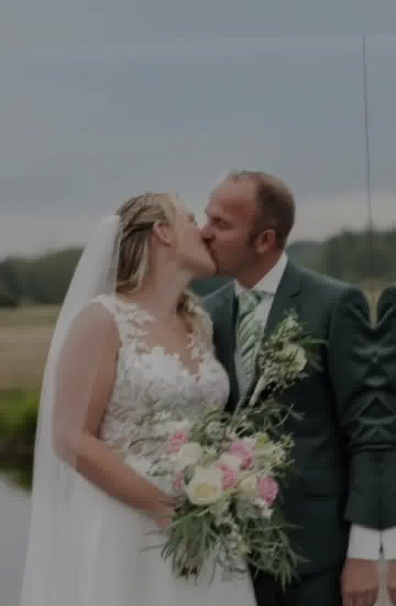
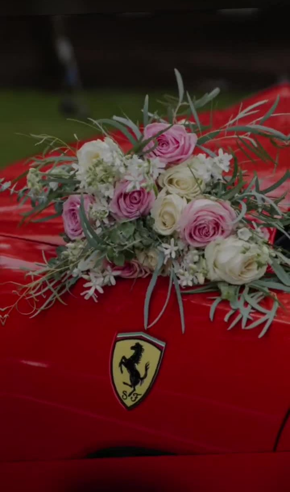
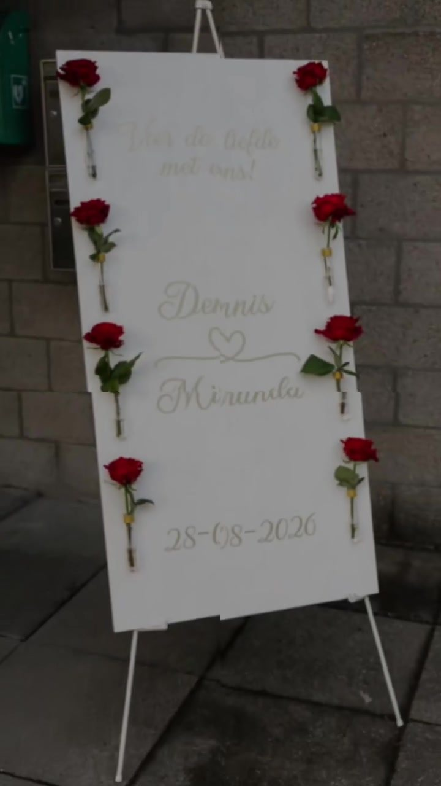
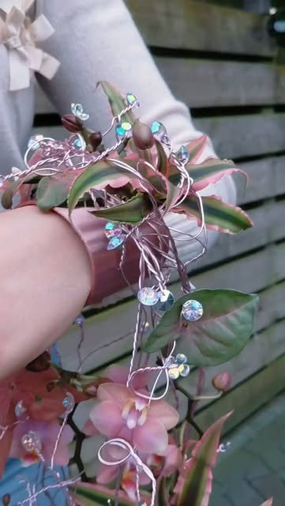
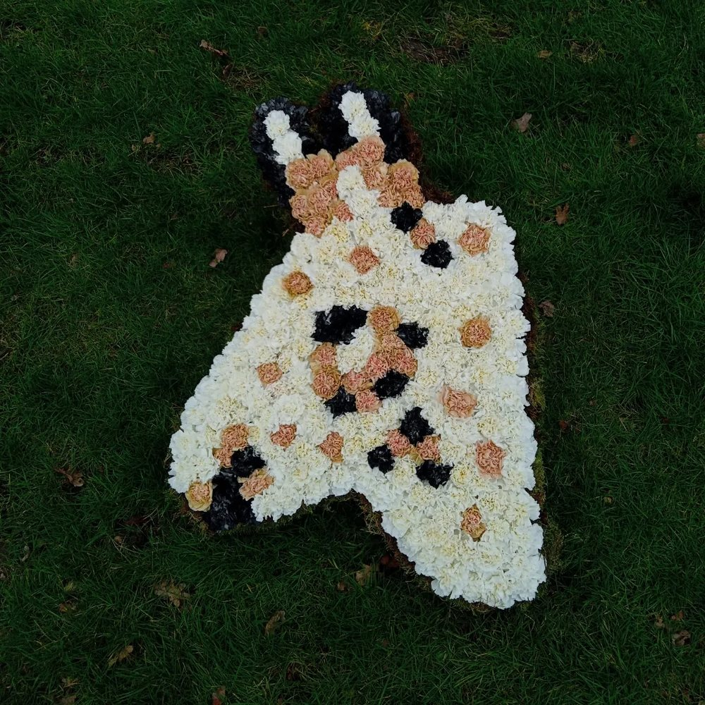
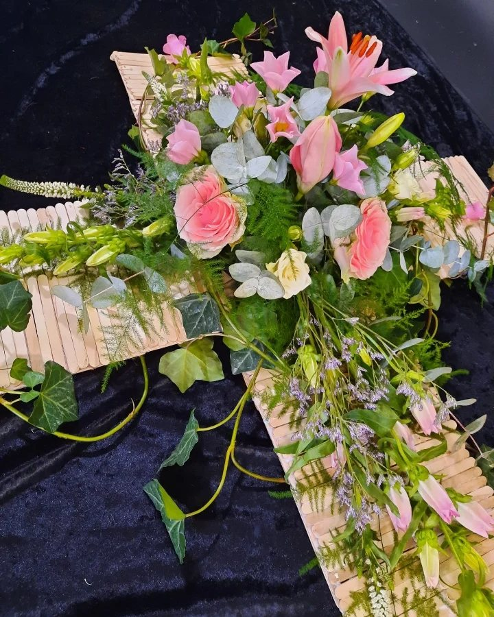

Ons bloemwerk
Boeketten, bruidswerk en rouwwerk, met de hand gemaakt in onze werkplaats in Etten-Leur.


Boeketten
Een boeket voor een verjaardag, als bedankje of zomaar. We werken met bloemen van het seizoen, dus wat er in het boeket komt wisselt mee met wat er binnen is.
Stuur een berichtje met de gelegenheid, de kleuren die je mooi vindt en voor wanneer je het nodig hebt.
- Bloemen van het seizoen
- In jouw kleuren en stijl
- Ook op dagen dat de werkplaats dicht is, op bestelling
Bruiloften & events
Voor de bruiloft van D&M, midden in het bos, maakten we het bruidsboeket, de corsages, de bloemen op de trouwauto en een welkomstbord met rozen. Alles in dezelfde stijl, zodat het één geheel wordt.




Ook voor bijzondere ontwerpen kun je bij ons terecht, zoals een bruidsboeket in een ring of een hangend bruidsboeket aan een armband. Avalon leerde die technieken tijdens masterclasses bij Hanneke Frankema.


Rouwwerk
Rouwwerk is erg bijzonder en belangrijk. Een rouwstuk dat is aangepast aan hoe iemand was, met een hobby, werk of een geliefd dier, maakt een uitvaart nog persoonlijker.
Zo maakten we een ezel precies na zoals de echte ezel eruitzag. En een kruis van ijsstokjes, waardoor het stuk heel natuurlijk oogt. Lelies, rozen, asparagus, hedera en eucalyptus geven het een zachte uitstraling.
Bel of app ons, dan bespreken we samen wat past.
Bestellen of langskomen
Stuur een berichtje met wat je zoekt en voor wanneer. Wij denken graag met je mee.
Flowerstyling By Avalon
Bestellen gaat het snelst via WhatsApp.
Openingstijden
- Maandag
- 13.00 – 17.00
- Donderdag
- 9.00 – 13.00
- Vrijdag
- 13.00 – 18.00
Dinsdag, woensdag, zaterdag en zondag open op bestelling of afspraak.